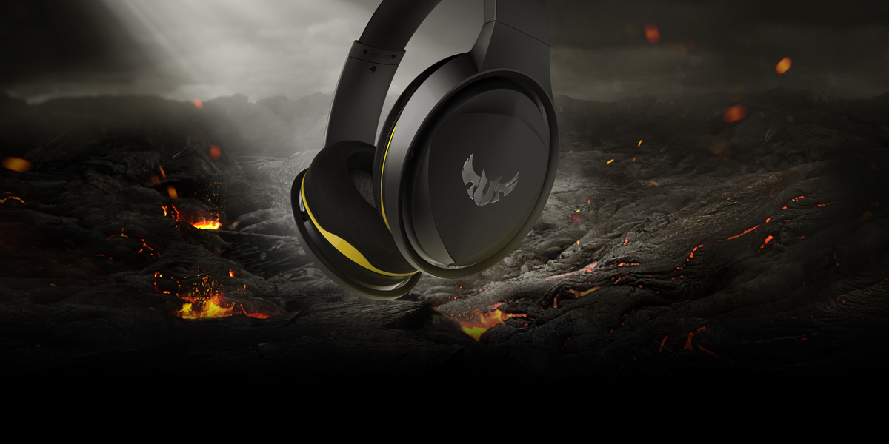
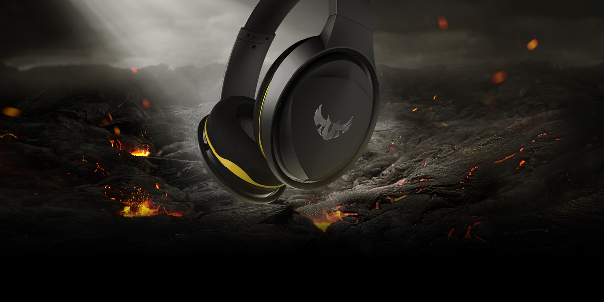
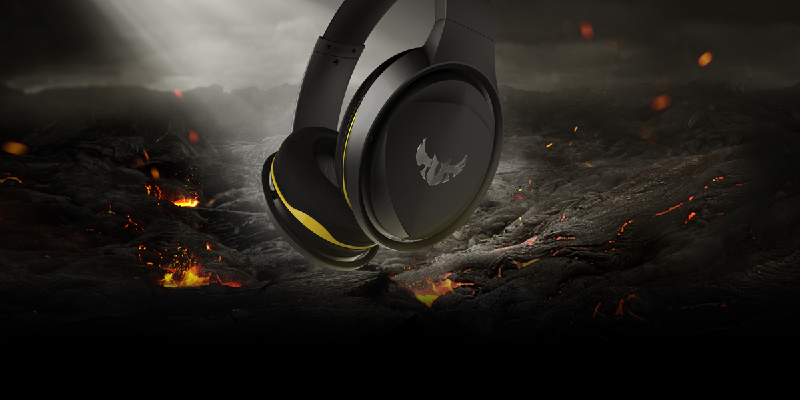

❮
❯

Tune in and hear what the world’s top musicians hear. JBL CLUB ONE headphones with Legendary JBL Pro Sound immerse you in your playlist and keep you in the moment with True Adaptive Noise Cancelling. These pro-inspired, Hi-Res certified headphones deliver audio tailor-made for your ears, thanks to EQ personalization and the My JBL Headphones App. High quality materials and premium design details like durable metal hinges, a leather headband and comfortable, cushioned, over-earcups, mean you will never want to take them off. Listen like a pro anywhere.
- Google Assistant & Amazon Alexa-
- Send a text message, tune into your favorite playlist, or find out if it’s going to rain later — without picking up your phone. Choose the Google Assistant or Amazon Alexa on the My JBL Headphones app, and your Voice Assistant will take it from there with a simple tap of the left ear-cup.
- Ambient Aware & Talk-thru-
- Stay aware while staying tuned into the music. A quick press of the Smart Ambient button activates the Ambient Aware function to amplify ambient sound while keeping you listening to your playlist. Meanwhile, the Talk-thru mode drops the music level down and amplifies the voices around you, so you can carry on a conversation without taking off your headphones.
- Dual-Mic Technology-
- No more searching for peace and quiet to take a call. The dual-mic technology on the JBL CLUB ONE cancels out ambient noise when you are on a call, so you can make calls anywhere. From wire-free music, seamlessly connected thanks to Bluetooth 5.0, to hands-free calls, they keep up while you keep moving.
- Dual Aux-
- Go ahead, be picky. The JBL CLUB ONE headphones have dual aux input, so you can plug in on either side. Either way, you’ll get a 3,500 mW max input and resistance to power surges.